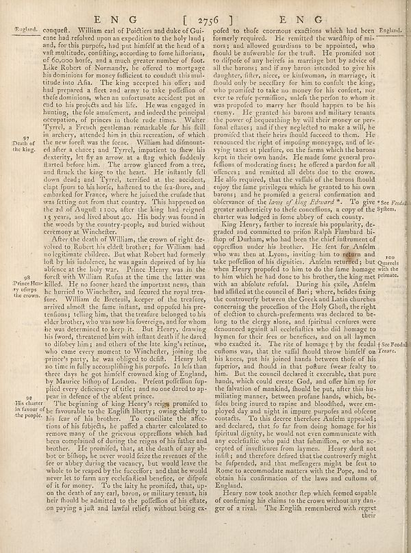

Scan ID britannica:309f765b1ecc83e0a7f7762e44b4a927a7555443:train:513
Image SHA-256 b5d3417f845a088da08dc55efa1095633fe0e0decb3d4cfae4b1d30692eb61e6
Status: ok. Running header: none (none). Removed page furniture: none.
PDF · raw Parse reply · LaTeX
Entries: E0028

| # | Class | Box | Parse 3.5 | Used text | Source |
|---|---|---|---|---|---|
| 0 | Picture | [0.2178, 0.0258, 0.7891, 0.0484] | E N G [ 2756 ] E N G | E N G [ 2756 ] E N G | parse |
| 1 | Caption | [0.0273, 0.0453, 0.0869, 0.0609] | England. | England. | super_vl |
| 2 | Text | [0.1006, 0.0461, 0.5029, 0.4266] | conquell. William earl of Poièters and duke of Gui- ene had refoled upon an expedition to the holy land; ands for this purpose, had pay himself at the head of a whilmende, according according to formal domains, of 60,000 borfe, and a much greater number of foot. Lale Roberts for Normandy, he offered to mortgage his dominations for money influence to conduct his mindt titute into Afia. The king accepted his offer; and had prepared a fleets and army to take profiofion of the defendants, when an unfortune excellent put an end to his projects and his life. He was engaged in hunting, the feel amule | conquest. William earl of Poitiers and duke of Guienne had resolved upon an expedition to the holy land; and, for this purpose, had put himself at the head of a vast multitude, confiding, according to some historians, of 60,000 horse, and a much greater number of foot. Like Robert of Normandy, he offered to mortgage his dominions for money sufficient to conduct this multitude into Asia. The king accepted his offer; and had prepared a fleet and army to take possession of these dominions, when an unfortunate accident put an end to his projects and his life. He was engaged in hunting, the sole am | super_vl |
| 3 | Text | [0.1035, 0.4273, 0.5039, 0.7141] | After the death of William, the crown of right de- volled to Robert his elett brother; for William had no legitimate children. But even Robert had formerly led by the indulences, but was again deprived of by his abience at the holy war. Prince Henry was in the word with William Rufaa as the time the latter was killed. He or former heard the important ones, than he hurried to Winchefter, and focused the royal trava-fore. William de Betettall, keeper of the restans, arrived at the famu infants and itures, and reported his pretentions telling him, that the treature belonged to his elder brother, | After the death of William, the crown of right devolved to Robert his eldest brother; for William had no legitimate children. But what Robert had formerly lost by his indolence, he was again deprived of by his absence at the holy war. Prince Henry was in the forest with William Rufus at the time the latter was killed. He no sooner heard the important news, than he hurried to Winchester, and secured the royal treasure. William de Breteuil, keeper of the treasure, arrived almost the same instant, and opposed his pretensions; telling him, that the treasure belonged to his elder brother, who was n | super_vl |
| 4 | Text | [0.0322, 0.7133, 0.5049, 0.7578] | 9H His charter in favour of the people. | His charter in savour of the people. The beginning of king Henry's reign promised to be favourable to the English liberty; owing chiefly to his fear of his brother. To conciliate the affec- | super_vl · expanded_beyond_parse |
| 5 | Text | [0.1016, 0.7188, 0.5059, 0.9258] | The beginning of King Henry's regim promised to be favorable to the English liberty; owing chiefly to his fear of his brother. To constitute the affections of his objetsk, he paffed a charity embalted to remove many of the grievous oppréffions which had been completed during the reign of his father and brother. He promised, that, at the death of any ab-bot or bihhop, he never would farze the revenant of the fee or abby during the vacation, but would leave the whole to be repayed by the fuscifor; and that would never be to form any eectifical benefits, or difpole of it for money. To the laiy he | The beginning of King Henry's reign promised to be favourable to the English liberty; owing chiefly to his fear of his brother. To conciliate the affections of his subjects, he passed a charter calculated to remove many of the grievous oppressions which had been complained of during the reigns of his father and brother. He promised, that, at the death of any abbot or bishop, he never would seize the revenues of the fee or abbey during the vacancy, but would leave the whole to be reaped by the successor; and that he would never let to farm any ecclesiastical benefice, or dispose of it for money | super_vl |
| 6 | Text | [0.5146, 0.0469, 0.9873, 0.3961] | pofed to thofe enormous exactions which had been formerly required. He remitted the wardship of mi- nors and allowed guardians to be appointed, who should be adwarefully, the truth. He promised not to difpole of any heirrels in marriage but by advice of all the barons; and if any banin intended to give his daughter, silver, minor, or kidnomas, in marriage, it should only be necefitary for him to confuls the king, who promised to take on money for his content, nor ever to seife primiffion, unlike the person to whom it was propounded to marry her fhoould happen to be his enemy. He granted his ba | pofed to those enormous exactions which had been formerly required. He remitted the wardship of minors; and allowed guardians to be appointed, who should be answerable for the truth. He promised not to dispose of any heiress in marriage but by advice of all the barons; and if any baron intended to give his daughter, sister, niece, or kinswoman, in marriage, it should only be necessary for him to consult the king, who promised to take no money for his consent, nor ever to refuse permission, unless the person to whom it was proposed to marry her should happen to be his enemy. He granted his baro | super_vl |
| 7 | Text | [0.5156, 0.3977, 0.9883, 0.8836] | King Henry, farther to increase his popularity, de- graded and committed to prinfan Kalpa Phambul bi- hop of Dunban who had been the chief instrument of opprillion under his brother. He tent for Anfelm who was then at Layou, inviting him to register and take profiofion of his digities. Anfelm returned; but quarrels when Henry propieded him to do the frame homage win the to him which he had done to his brother, the king next primates. with an absolute refuge. During his sole, Anfelm had fulfilled at the council of Bars; where, builds fixing the controversy between the Gods and Latin churches co | King Henry, farther to increase his popularity, degraded and committed to prison Ralph Flambard bishop of Durham, who had been the chief instrument of oppression under his brother. He sent for Anselm who was then at Lyons, inviting him to return and take possession of his dignities. Anselm returned; but quarrels when Henry proposed to him to do the same homage to him which he had done to his brother, the king met with an absolute refusal. During his exile, Anselm had assisted at the council of Bari; where, besides fixing the controversy between the Greek and Latin churches concerning the proce | super_vl |
| 8 | Text | [0.5176, 0.8852, 0.918, 0.9398] | Heavy, now took another flep which femed capable of confirming his claims to the crown without any danger of a rival. The English remembered with regret their | England. Henry now took another step which seemed capable of confirming his claims to the crown without any dan- ger of a rival. The English remembered with regret their | super_vl |
Britannica scans: National Library of Scotland, CC0 1.0. Wikipedia text: Wikipedia contributors, CC BY-SA 4.0, revision links on each page. Generated 2026-10-18T13:26:14+00:00.